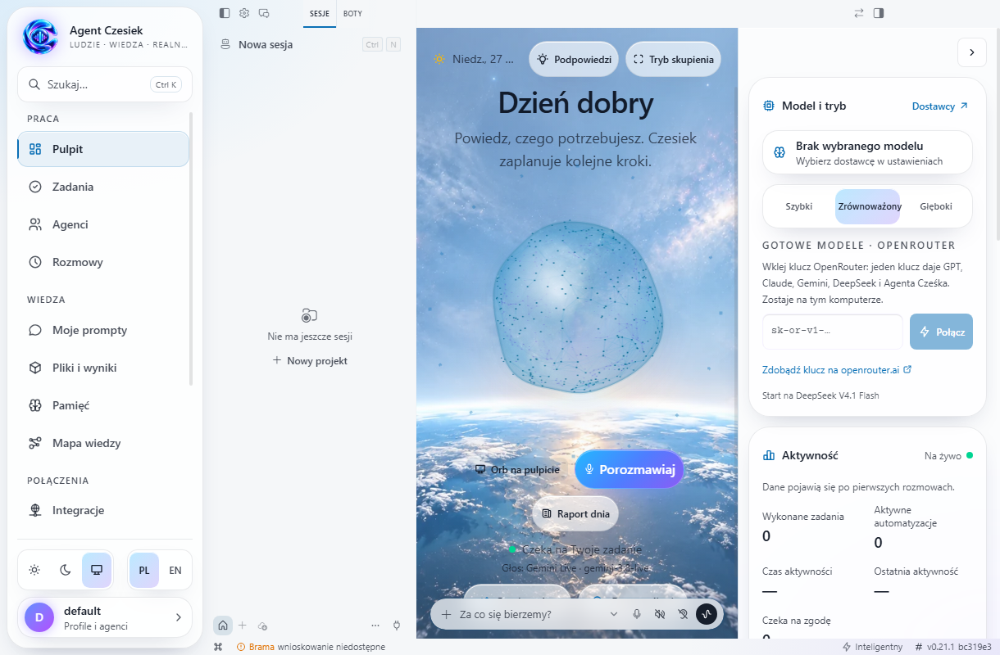

„Sprawdź to za mnie”.
Porównanie ofert, narzędzi lub konkurencji. Zamiast kilkunastu otwartych kart: uporządkowane wnioski i źródła.
WYNIK / porównanie + rekomendacjaCzesiek pomoże zamienić pomysł w plan, zlecić pracę agentom i zebrać wyniki. Ty ustalasz kierunek. On pomaga dopiąć szczegóły.
Aplikacja desktopowa · Polski interfejs · Własne klucze API
Nie musisz opisywać każdego kliknięcia. Zacznij od celu. Przy trudniejszym zadaniu Czesiek ma dopytać o to, co naprawdę wpływa na wynik.
TY
CZESIEK
To pokaz działania interfejsu, nie połączenie z modelem AI.
Cel, warunki i oczekiwany rezultat.
Researcher sprawdza informacje i źródła.
Porównanie, wnioski i rekomendacja.
Wybierz przykład i zobacz, jak cel zmienia się w zadanie.
Od zebrania informacji po przygotowanie pliku. Możliwości Cześka rosną wraz z narzędziami i kontami, które z nim połączysz.
Porównanie ofert, narzędzi lub konkurencji. Zamiast kilkunastu otwartych kart: uporządkowane wnioski i źródła.
WYNIK / porównanie + rekomendacjaPriorytety, terminy i plan działania. Po podłączeniu kalendarza lub poczty możesz uwzględnić także informacje z tych usług.
WYNIK / plan + następne krokiStreszczenia, porównania dokumentów i lista ustaleń. Zleć przygotowanie materiału, do którego łatwo wrócisz.
WYNIK / podsumowanie + plikRaport tygodniowy, przegląd projektu lub monitoring wybranych informacji. Skonfiguruj zadanie i częstotliwość.
WYNIK / powtarzalne zadanieRozmowy, zadania, agenci, pamięć i pliki z wynikami w jednej aplikacji. Orb pokazuje, co dzieje się z rozmową i zadaniem.

Schowaj główne okno i zostaw przesuwaną kulę na pulpicie.
Osobne stany planowania, pracy, słuchania i oczekiwania na zgodę.
Historia rozmów, pamięć oraz pliki pomagają zachować ciągłość pracy.
Masz sprawdzoną instrukcję? Zamień ją w skilla. Nie musisz pisać kodu, żeby opisać, jak ma powstawać Twój raport czy research.
Otwórz katalog AI EvolutionSkill zapisujesz w wybranym profilu. Użyjesz go w nowej rozmowie lub przypiszesz do roli agenta.
Przykładowa instrukcja. Dodatkowe skrypty i załączniki wymagają osobnego dodania.AI Evolution Polska rozwija doświadczenie Cześka na silniku Hermes Agent. Każda część ma konkretne zadanie.
Mówisz lub piszesz.
Decydujesz o wyniku.
Rozmowa, doprecyzowanie
i koordynacja.
Narzędzia, skille, pamięć
i wykonanie zadania.
Własny dostawca modelu. Podłączasz API, np. OpenRouter. Rozmowa Live wymaga zgodnego dostawcy i konfiguracji głosu.
Kontrola dostępu. Integracje podłączasz osobno. Uprawnienia i zgody określają, co agent może zrobić na Twoim komputerze.
Kolejne zmiany upraszczają codzienną pracę i dają więcej kontroli nad asystentem.
Zobacz historię zmian ↗Import przez wklejenie, podgląd, kategorie oraz Asystent dnia, Koordynator projektu i Researcher. Wyraźniejsze stany orba.
Szczegóły aktualizacji #66 ↗Uporządkowana nawigacja, konfiguracja komunikatorów i informacje o AI Evolution Polska.
Szczegóły aktualizacji #64 ↗Logo na starcie, animacja powitalna, odświeżona dokumentacja i poprawki wyglądu kuli.
Szczegóły aktualizacji #61 ↗Projekt jest we wczesnej fazie rozwoju. Sprawdź dostępne wydanie albo porozmawiaj o zastosowaniu Cześka w swojej firmie.
Poznaj aplikację, dodaj własny klucz API i wypróbuj ją na konkretnym zadaniu. Użytek prywatny i edukacyjny zgodnie z warunkami projektu.
Przejdź do dostępnych wydań ↗Koszt usług modeli AI rozliczasz u ich dostawcy. Instalator może być starszy niż kod w repozytorium.Masz pomysł na wdrożenie, własny proces lub wykorzystanie marki? Opisz potrzeby, żeby ustalić zakres i warunki współpracy.
Zapytaj o wdrożenie ↗Kontakt przez GitHub. Zgłoszenie jest publiczne — nie zamieszczaj danych poufnych.Potrzebujesz skonfigurowanego dostawcy modelu i własnego dostępu do API. Poczta, kalendarz, komunikatory oraz inne integracje wymagają osobnego połączenia. Onboarding prowadzi przez konfigurację aplikacji.
Aplikacja ma obsługę rozmowy Live oraz pływającą kulę na pulpicie. Działanie zależy od dostawcy, dostępnego modelu, klucza API i mikrofonu. Pełna rozmowa głosowa równolegle z pracą subagentów pozostaje obszarem dalszych testów.
Nie wszystkie. Gdy korzystasz z modelu w chmurze, treść potrzebna do wykonania zadania trafia do wybranego dostawcy. Przepływ danych zależy również od podłączonych integracji. Nie umieszczaj kluczy API w rozmowach ani w publicznych plikach.
Kod Hermes Agent jest udostępniony na licencji MIT, która dopuszcza użycie komercyjne. Autorskie logo i materiały marki Agent Czesiek mają osobne warunki: użytek prywatny i niekomercyjny oraz odrębna zgoda lub licencja na wykorzystanie komercyjne. Komponenty zewnętrzne zachowują własne licencje.
Przeczytaj warunki marki ↗To wersja rozwojowa. Przed wdrożeniem należy sprawdzić konkretny proces, integracje, uprawnienia i wymagania dotyczące danych. Dostępne funkcje mogą się różnić między kodem źródłowym a pobranym wydaniem.